Political Data Voids
A Latinx Case Study
Claudia Flores-Saviaga
West Virginia University
saviaga.com
Rory McCaffrey
University of Washington Seattle
Saiph Savage
University of Washington Seattle
saiph.org
_1. Summary
We found few instances of actionable political information being shared in the weeks leading to the 2020 Presidential Election, demonstrating a high probability of data voids in public Facebook communities for Latinx-Americans. While there was some information on political themes like immigration or healthcare, there wasn't really any meaningful discussion taking place. While we can't measure the impact of the political information vacuum, the critical takeaway is a politically neutral avenue is unused in the disemination of complex knowledge for a politically-underepresented community.
Tools:
Python Seaborn, Pandas, Matplotlib, NTLK, Facebook Crowdtangle
_2. What Are Data Voids
Data Voids as coined by Golebiewski and Boyd are queries where lack of information available causes
disproportionately higher overrepresentation of relevant but unreliable sources. Let's look at the
term query "election". Please note that this is just an fictitious diagram to better illustrate my point and current searches are very different
from the graphics shown. *hover mouse over graphics
_3. Social Media Data Voids
We've transitioned this idea of data voids into the use of social media. This method of data retrieval has two core differences. First,
the user is now passively absorbing information as opposed to actively looking and identifying through a search engine. Second,
information is being shared via peer-2-peer messaging and not recommended by an algorithm.
Now data voids are no longer about the type of query in use, but a combination of interal knowledge and digital relationships. Let's look at
the following story.
Let's assume you are not a doctor.
_4. Latinx Political Representation
So why did we choose Latinx as our case study population?
We had a mixture of reasons:
○Minority groups are often ignored in media unless supporting stereotypes.
○Latinx-immmigration was a prominent subject of interest during the 2016 election.
○The Latinx population is one of the fastest growing ethnic groups in the United States
○Prior cultural knowledge from my collaborators.
○Latinx populations have been previously targeted from misinformation.
_5. Methodology
We used a list from the pew research center to define the main politicla themes of interest
to the Latinx population. These themes were:
○ Abortion
○ Climate Change
○ Covid
○ Crime
○ Economy & Economic Inequality
○ Gun Control
○ Immigration
○ Supreme Court
○ Healthcare
○ Foreign Policy
○ Racism
From there we created a list of terms in English and translated into Spanish
that could correlate as discussion of that political discourse. Posts found mentioning the border,
naturalization, or I.C.E. could be inferred as immigration-related. Taxes, jobs, or unemployment
on the other hand was a sample of the terms used as indicators of the economy.
Because data voids are vacuums the only way we could suggest their existence in the social media community
is by comparing the frequency of discussion. For the purpose of this study
we defined three contexts which could influence the sharing of political information; news media,
political, and community. Inclusion criteria for the Facebook groups and pages used in
this study needed explicit reference to the Latinx community and be a public page or group. Additional
requirements for the finding and organization of each Facebook community was context specific.
○News media: Facebook page of Latino-oriented outlets as described by the Latino Media Report.
○Social: Explicit reference of Latinx cultural group (Hispanic, Cuban, Latino) and American identifier
(California, Santa Barbara, D.C.)
○Political: If the American identifier is political reference (Republican, Conservative, Democratic)
After identifying the communities for this studied we queried our list of terms into Crowdtangle, a Facebook owned social-media scraping tool,
to save each post from August 18, 2020 (Joe Biden's Democratic nomination) until November 3rd, 2020 (Election day). Every post is collected and saved under
its respective political theme. Please note that each theme is not exclusive, therefore posts can be archived under multiple themes. Once we had our data,
we generated a null hypothesis to guide our analysis process.
H(0): Latinx political Facebook communities have no impact on frequency of political-topic conversations.
To disprove our null hypothesis, we had to perform a statistical analysis on our thematic discourse. We counted the frequency of posts for each political theme across
all pages and groups separately. We then conducted a Levene test due towards our difference in sample sizes to see if our samples demonstrated equal variance. If the Levene test was
statistically insignifcant, we would use a regular ANOVA otherwise a Welsh ANOVA would be used instead. Statistical signifance with either ANOVA would show that
the observed frequency of the political themes were impacted by the group context and political groups do have an impact on frequency of conversation.
_6. Findings
The number of Facebook communities mentioning at least one political theme differed by context.
○Social : 611 Unique Communities
○Political: 160 Unique Communities
○News: 402 Unique Communities
Between the 1000+ different communities, there were about 250,000 posts shared mentioning one political topic.
The Levene test is used to measure variance with the median.
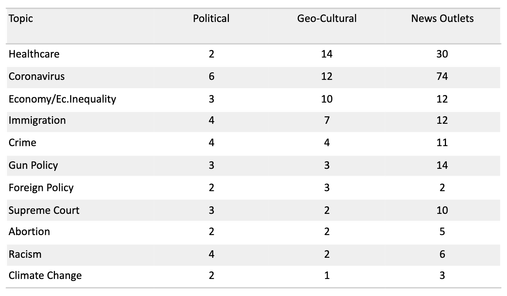
And then we conducted a statistical analysis.
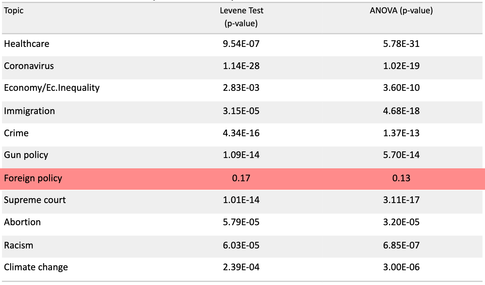
Foreign policy was the only theme to not show any statistical difference (p < 0.05). So for most themes,
a person's political exposure is dependent on which groups they are apart of (independent variable) and our null hypothesis is
disproven. If we look at the following
visualization we can see the primary focus of each category. COVID and healthcare (likely related) have the
highest social media coverage.
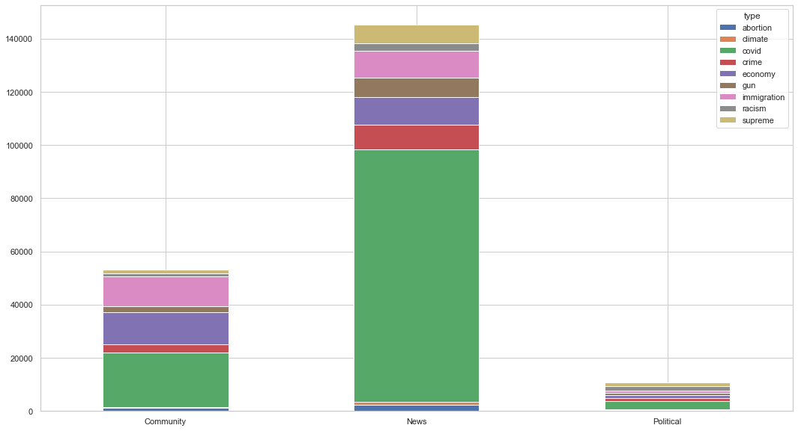
Data voids can typically be described along a binary; short tail or long tail. In short tail
data voids, a need for information is apparent either in response to news worth events like crises or pandmeics.
Short tail data voids got their name because there's an implied assumption that rumors or ambiguities will
be cleared up in time. This contrasts with long tail data voids where there's no such guarantee. Instead absence of
attention-grabbing events, misinformation surrounding the topic will likely proliferate uncorrected.
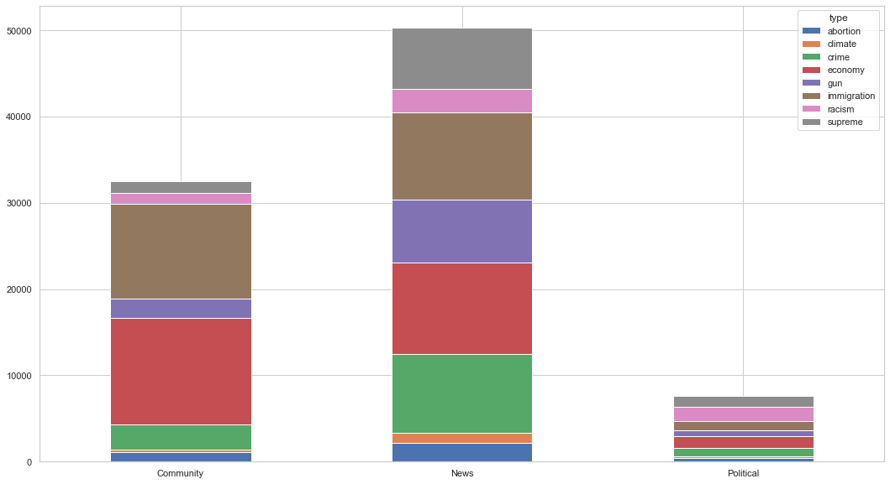
To look at not as newsworthy events like immigration or abortion we can filter out the long-tail COVID & healthcare category.
By doing this we can more easily understand which topics are being shared discussed similarly between news and cultural groups and which topics
do news outlets emphasize more. Political groups seem to underdiscuss most topics, but likely attributed to their small sample size.
To examine this idea, we compare the averages, using the same filters of COVID noise to make better comparissons
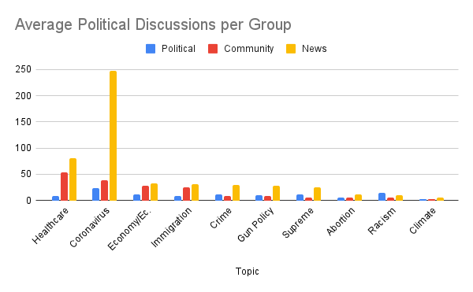
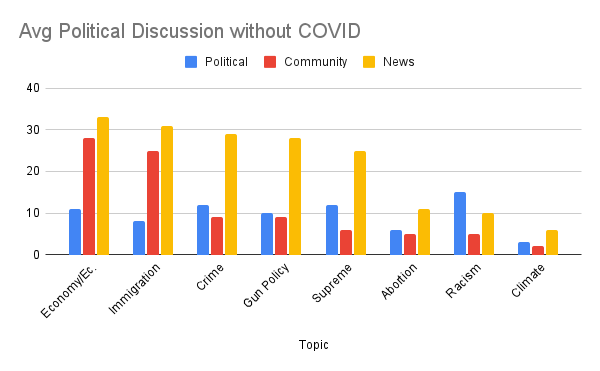
With these visualizations we can see multiple different ideas. Cultural groups have high exposure to economic and immigration-information but are otherwise
politically ambivalent. Political groups are the most stable of the three categories with the least change in relationship to political information.
The absence of news focus in abortion, racism and climate change suggesting that these topics are unimportant
to the Latinx community. However, if that was the case, then why do political groups appear to overdiscuss the theme?
To
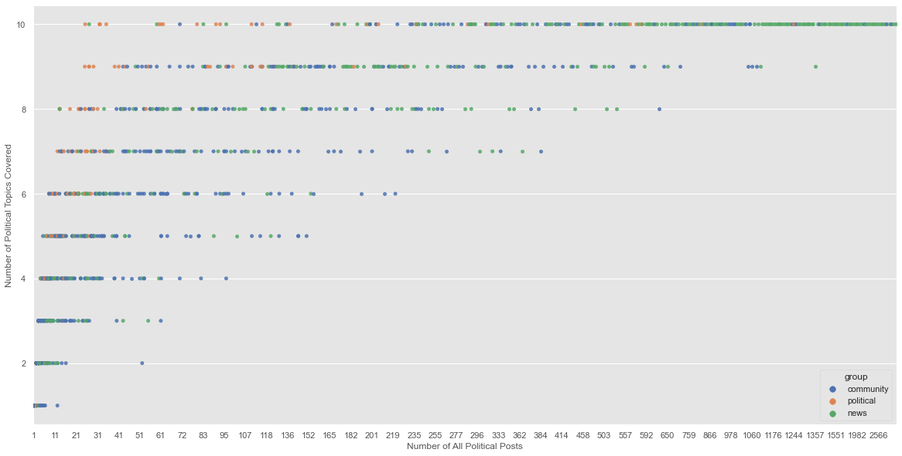
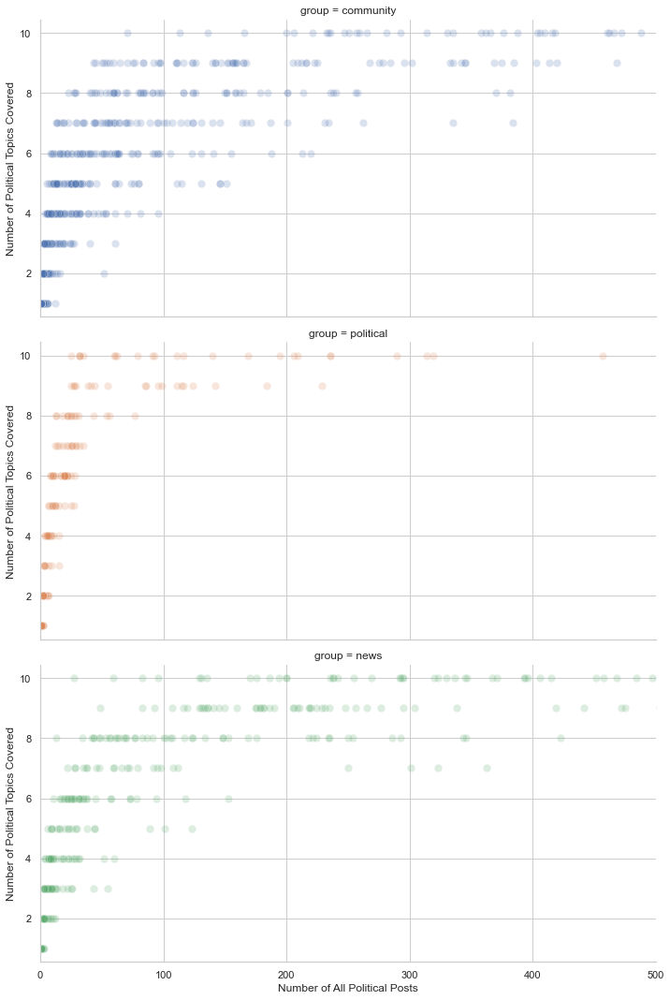
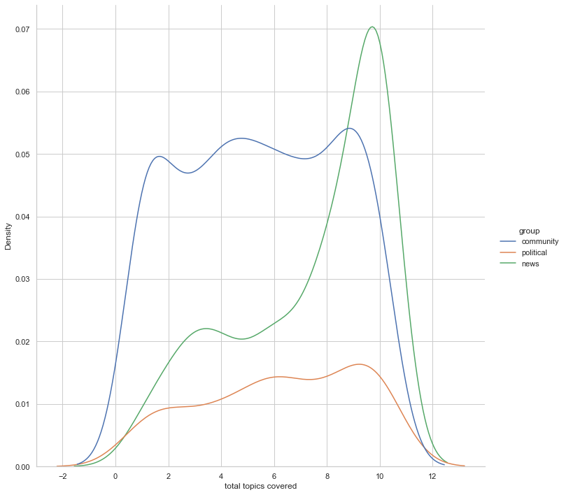
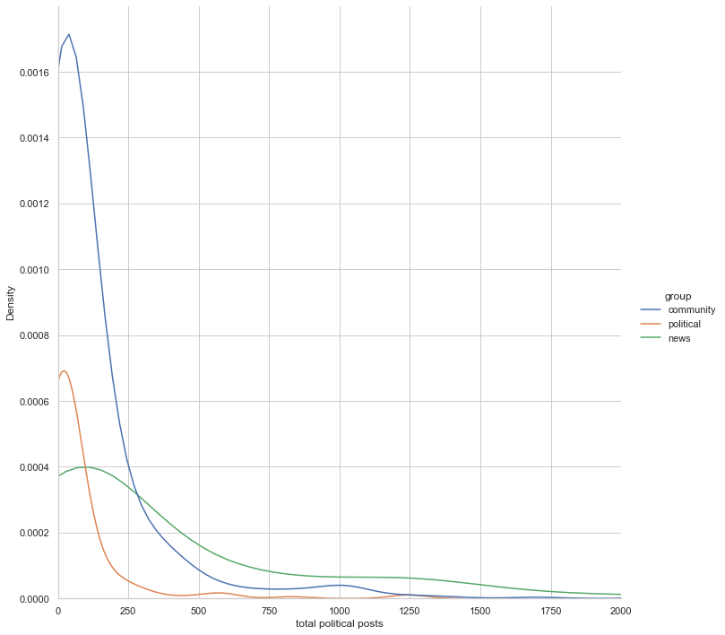
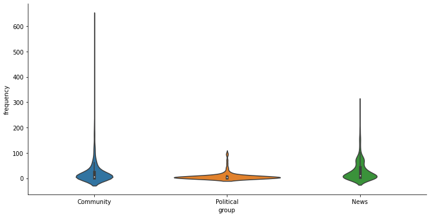
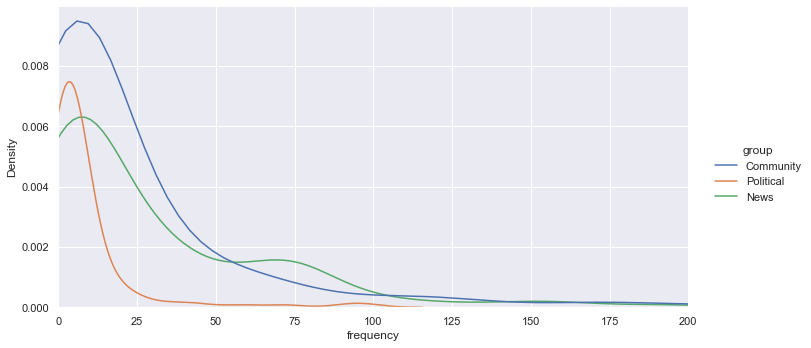
_7. Explorative Quant Analysis
_8. Implications
_9. Potential Error